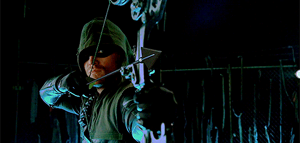
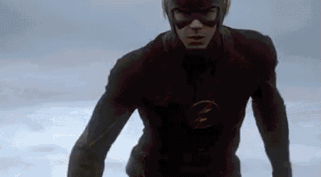
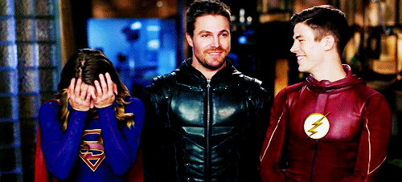
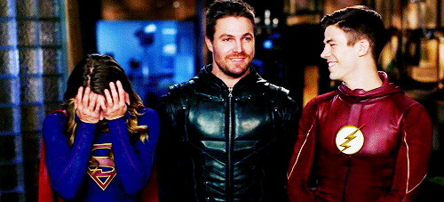

Séries Que Foram Lançadas Pela DC Comics na CW
A primeira série de televisão foi Arrow, baseado no personagem Arqueiro Verde, que estreou em outubro de 2012. O universo foi ampliado com a série The Flash em outubro de 2014, que conta a história de Barry Allen / Flash. O universo expandiu-se com a série animada Vixen que fez sua estreia em 25 de agosto de 2015 no The CW Seed, e expandiu novamente com a série em live-action, Legends of Tomorrow em janeiro de 2016. A franquia também realizou um crossover com série de televisão da DC Comics que iam ao ar em outros canais; Arrow fez um crossover com a série Constantine, da NBC na quarta temporada, enquanto houve múltiplos crossovers com a série Supergirl, principalmente seguindo sua mudança da CBS para a The CW. A série animada Freedom Fighters: The Ray se juntou ao universo em dezembro de 2017.
Multiverso
Em Outubro de 2014, Johns explicou que essa abordagem da DC para seus filmes e séries de televisão seria diferente ao universo cinematográfico da Marvel Studios, afirmando que o seu universo de filmes e universos de TV seriam mantidos separados dentro de um multiverso para permitir "todos a fazer o melhor produto possível, para contar a melhor história, para fazer o melhor do mundo." A segunda temporada de The Flash começou a explorar este conceito de multiverso, introduzindo a Terra-2, a qual figuram doppelgängers dos habitantes do Arrowverse (ou Terra-1). No episódio "Welcome to Earth-2" de The Flash, vislumbres do multiverso são vistos, incluindo uma imagem da Supergirl estrelada por Melissa Benoist em Supergirl e uma imagem de John Wesley Shipp como o Flash da série de 1990, implicando que essas duas séries de televisão existem em Terras alternativas do Universo Arrow; Supergirl foi confirmado como uma Terra alternativa de The Flash no episódio crossover "Worlds Finest", e foi designado a Terra-38.
Arrow (série de TV)
>Em Arrow, Oliver Queen (interpretado por Stephen Amell) é um playboy reabilitado de 27 anos, que após ficar preso numa ilha no sul da China durante 5 anos, retorna a civilização como um homem mudado procurando fazer diferença. Durante a 1ª temporada, vemos flashbacks dos primeiros meses de Oliver na ilha, enquanto que no presente, Oliver é apelidado de vigilante por construir um arsenal para combater os corruptos e criminosos de Starling City (que a partir da quarta temporada passa a se chamar Star City), e acaba sendo apelidado pela mídia de "Capuz", assumindo posteriormente o codinome "Arqueiro" e mais recentemente "Arqueiro Verde".
Embora seja a maior adaptação para o personagem, é também a que mais destoa do Arqueiro Verde dos quadrinhos, sendo uma grande parte de sua personalidade inspirada no Batman, assim como os inimigos que enfrenta serem compartilhados entre o Arqueiro Verde e o vigilante de Gotham nos quadrinhos. Não possuindo seu icônico cavanhaque e nem mesmo sua personalidade extrovertida. Apesar disso, gerou dois spin-offs; The Flash e DC's Legends of Tomorrow.
Flash (série de TV)
Depois de testemunhar o assassinato misterioso de sua mãe e a condenação injusta de seu pai pelo crime, Barry Allen (Grant Gustin) é acolhido pelo detetive Joe West e sua filha, Iris. Allen se torna um brilhante, mas socialmente desajeitado investigador da cena do crime do Departamento de Polícia de Central City. Sua obsessão com o seu passado trágico faz com que ele se torne um excluído entre os seus colegas; ele investiga casos frios, ocorrências paranormais e avanços científicos de ponta que podem ajudá-lo a desvendar algo sobre o assassinato de sua mãe. Ninguém acredita em sua descrição do crime—que uma bola de relâmpago com o rosto de um homem invadiu sua casa naquela noite—e Allen é ferozmente conduzido para vindicar a si mesmo e para limpar o nome de seu pai. Quatorze anos após a morte de sua mãe, um avançado acelerador de partículas no S.T.A.R. Labs apresenta falhas durante a sua apresentação pública, banhando o centro da cidade com uma forma até então desconhecida de radiação e da criação de uma severa tempestade. Allen é atingido por um raio da tempestade e que o fez colidir com vários frascos com produtos químicos em seu laboratório. Despertando depois de um coma de nove meses, ele descobre que tem a habilidade de se mover a uma velocidade sobre-humana. Dr. Harrison Wells, o criador do acelerador de partículas que falhou, descreve a natureza especial de Barry como "meta-humano"; Allen logo descobre que ele não é o único que foi alterado pela radiação. Allen promete usar seus dons para proteger Central City a partir da escalada de violência dos meta-humanos criminosos. Ele é auxiliado por alguns amigos próximos e associados que guardam seu segredo, incluindo os membros da equipe do S.T.A.R. Labs Cisco Ramon e Caitlin Snow.
O Universo da CW
 

Universo Compartilhado da DC Comics na TV da The CW, mais conhecido como Universo Arrow (Arrowverse), é um universo ficcional compartilhado que é centrado nas séries de televisão em exibição no The CW, desenvolvido por Greg Berlanti, Marc Guggenheim, Andrew Kreisberg, Phil Klemmer e Geoff Johns, com base em personagens que aparecem nas publicações da DC Comics. O universo compartilhado, muito parecido com o Universo DC em quadrinhos ou o Universo Estendido da DC, foi estabelecido pelo crossover de elementos comuns; como: enredo, configurações elenco e personagens. As principais estrelas do Universo Arrow são Stephen Amell como Oliver Queen / Arqueiro Verde, Grant Gustin como Barry Allen / Flash, Melissa Benoist as Kara Danvers / Supergirl, Megalyn Echikunwoke como Mari Jiwe McCabe / Vixen, com um elenco já lançado Legends of Tomorrow, incluindo Arthur Darvill como Rip Hunter, Caity Lotz como Sara Lance / Canário Branco, Brandon Routh como Ray Palmer / Átomo, Dominic Purcell como Mick Rory / Onda Térmica, com Victor Garber e Franz Drameh como Martin Stein & Jefferson "Jax" Jackson / Nuclear. Russell Tovey estrela Ray Terrill / The Ray.